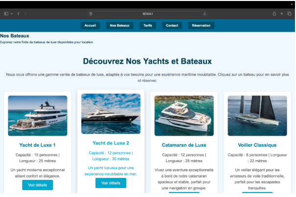
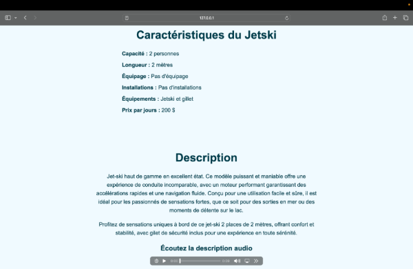

AP 1.2 · Site web MSN Boats · Les Sables d'Olonne
Dans le cadre de l'AP 1.2 de première année de BTS SIO, nous avons conçu et développé un site web complet de location de bateaux pour la société fictive MSN Boats, basée au port des Sables d'Olonne (85). Le projet a été réalisé en équipe de trois : Mathis Rouvreau, Samuel Aubron et Noah Herpin.
Le site propose une expérience complète pour les utilisateurs : consultation de la flotte, visualisation des tarifs, réservation en ligne et prise de contact, le tout avec une interface moderne incluant un effet parallax et une barre de progression au scroll.
J'ai personnellement développé deux parties clés du site : la page catalogue de la flotte et les pages de détail de chaque embarcation.

Affichage de la flotte complète de 8 embarcations avec photos, caractéristiques principales et liens vers les fiches détaillées. Mise en page en grille responsive.

Page générée pour chaque embarcation : caractéristiques complètes (capacité, longueur, équipage, équipements, prix/jour), description et lecteur audio HTML5 descriptif.